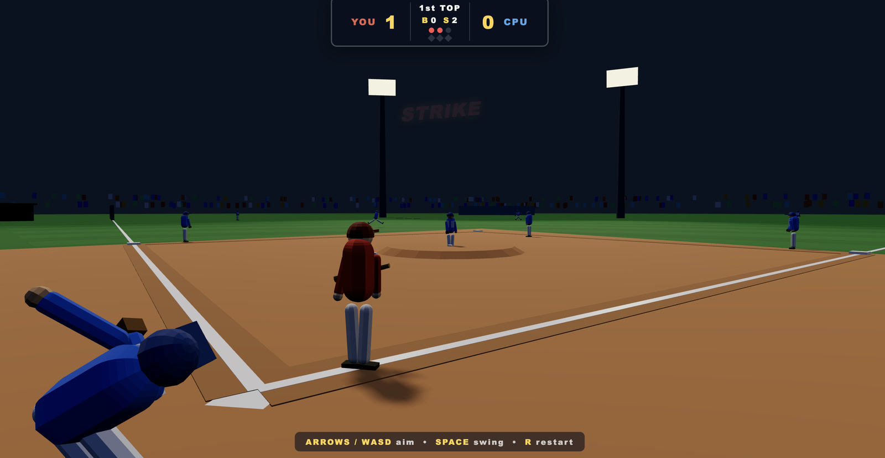
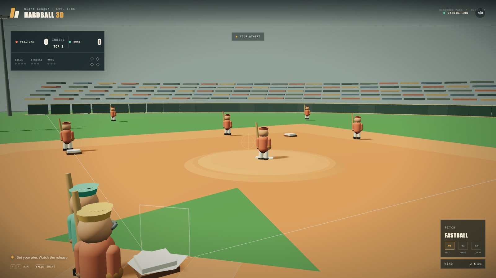

02 October 2026
Qwen 3.8 Flash Next
Sushi 1.1.0 · Pi coding agent
Local run
A three-inning game build with recorded headless game checks. The run sheet notes acceptable visuals and inconsistent baseball rule behaviour.
Local test machine: Apple M5 Pro · 64 GB unified memoryRun window 29 September — 03 October 202612 recorded runs
Workload · Agentic coding · 3D baseball · Revision 1
A one-shot coding challenge to build a complete, playable 3D arcade baseball game. The prompt asks for at least one full inning, with the player batting in the top half and pitching in the bottom half.
3 recorded attempts
02 October 2026
Sushi 1.1.0 · Pi coding agent
A three-inning game build with recorded headless game checks. The run sheet notes acceptable visuals and inconsistent baseball rule behaviour.

04 October 2026
TensorFold 0.6.4 · Pi coding agent
Pi's final session report records gameplay checks for both batting sides, scoring, inning progression and restart, with no console or page errors reported during multi-minute autoplays.

03 October 2026
OpenAI Codex · xhigh reasoning · one-shot
A one-inning game build with a successful Vite production build recorded. No independent gameplay test report was retained.
Each attempt starts from a project scaffold and must deliver the full game loop: pitching, batting and timing, ball movement, fielding, base running, outs and scoring, inning changes, visible feedback, and restart without reloading. The game should use procedural Three.js geometry and work in a modern desktop browser.
How to read this comparison
Compare the generated builds and the checks recorded for each attempt. There is no normalised quality score, and the cloud task’s cumulative token totals and end-to-end rate include repeated context, reasoning, tool calls and waiting — they are not comparable with local per-request decode or prefill rates. The method page sets out which figures can and cannot be set against each other.